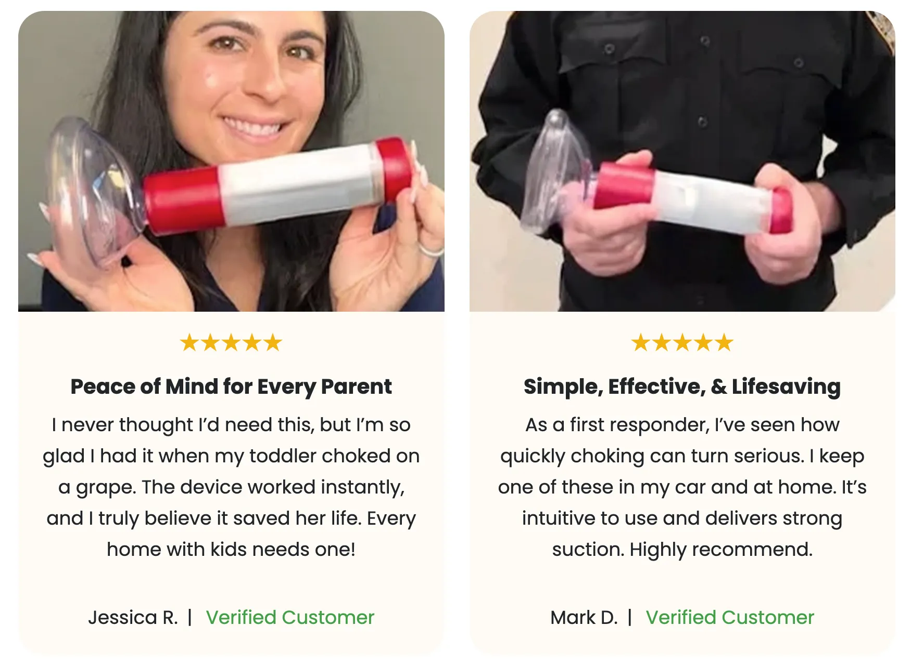
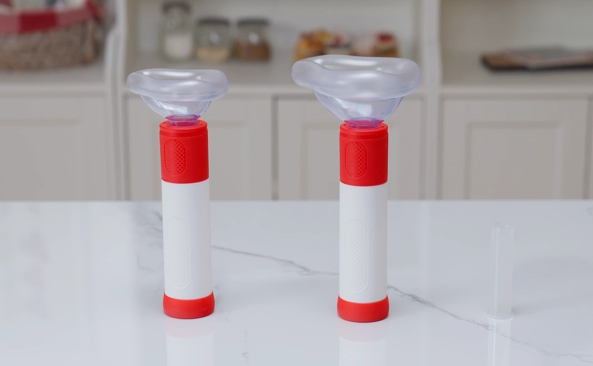

by Robert Henderson
Lifestyle
Published on Sept 04, 2025 at 9:47 PM
Six months ago, my wife Margaret started choking on a piece of steak at our dinner table.
She turned purple in 90 seconds.
I tried the Heimlich maneuver. At 72, with arthritic hands and bad shoulders, I couldn't generate enough force to save her.
We live 20 minutes from the hospital. Margaret had 3 minutes at most.
Every 2 hours, a senior citizen dies from choking. Here's what doctors don't tell you:¹
But here's the REAL killer: The Heimlich maneuver was designed for young, healthy bodies – NOT seniors with fragile ribs and weak muscles.
When Margaret started choking, I discovered this terrifying truth firsthand...
That Sunday evening started normally. Margaret was laughing at something on TV when she suddenly went silent.
Fork dropped. Hands to throat. Eyes bulging with terror.
I jumped up, got behind her, positioned my hands... but at our age, everything that used to be simple becomes impossible:
Margaret's lips turned blue. Then purple. Her eyes started rolling back.
In that moment, watching my wife of 48 years dying in my arms, I remembered something...
Three weeks earlier, our neighbor Frank had cornered me at the mailbox.
"Bob, you NEED this," he said, showing me his phone. "My brother-in-law just choked on steak. Almost died. The Heimlich didn't work, but THIS saved him."
He was showing me something called ResQvac – looked like a small plunger with a face mask.
I thought Frank was being dramatic. But for $49.99? I figured it couldn't hurt to have one "just in case."
Thank God I listened.
With Margaret dying in my arms, I grabbed the ResQvac from our kitchen drawer.
Three simple steps: PLACE over mouth. PUSH down. PULL up.
The steak shot out like a bullet. Margaret gasped. Coughed. Started breathing.
8 seconds. That's all it took.
When paramedics arrived 18 minutes later, Margaret was sipping water, embarrassed about "the fuss." The EMT looked at the device and said:
"Ma'am, this saved your life. At your age, the Heimlich almost never works in time."

Since that night, I've become obsessed with understanding why this simple device succeeded where traditional methods failed:
1. NO Physical Strength Required
Unlike the Heimlich, which requires 120+ pounds of pressure,
ResQvac uses gentle suction. Even someone with severe arthritis can use it.
2. Safe for Fragile Senior Bodies
No risk of broken ribs, punctured organs, or internal bleeding.
Just gentle suction that clears the airway.
3. Works in ANY Position
Wheelchair? Bed-bound? Doesn't matter. Works sitting, standing,
or lying down.
4. You Can Use It ON YOURSELF
Live alone? Spouse too frail to help? ResQvac can be
self-administered – impossible with the Heimlich.
5. FDA Registered & Patented
This isn't some gimmick. It's medical-grade equipment with over
2,927 documented saves.
Margaret had been "careful" for 72 years. She chewed thoroughly. Cut food small. Never talked while eating.
It only takes ONE moment. ONE distraction. ONE piece of food.
Since sharing our story at church, I've heard dozens of near-misses:
If you're thinking "I'll just call 911" – average response time is 7-14 minutes. Brain damage starts at 4 minutes. Death at 6.

What's your plan when someone starts choking at YOUR dinner table?
Be honest:
If you answered "no" to ANY of these, you need ResQvac.
Look, I get it. $49.99 seems like a lot for something you "might never use."
Margaret and I thought the same thing. We waste more than that on medications that barely work. Cable TV we don't watch. Restaurant meals we forget.
But can you really put a price on being able to save your spouse's life? Your own life?
One for each car. The RV. Both kids' houses. The cabin. Even keep one in Margaret's purse.
Excessive? Maybe. But I'll never watch someone I love choke to death if I can help it.
Our kids rolled their eyes at first. "Dad's being paranoid again."
Then our son used one to save his 4-year-old daughter. Now THEY'RE buying them for everyone.
Right now, ResQvac is offering significant discounts when you buy multiple devices. Many seniors are getting one for home, one for the car, and extras for adult children.
Remember: This device works on ANYONE – grandkids, adult children, even yourself. One purchase protects your entire family.
Margaret and I just celebrated 49 years of marriage. We almost didn't make it to 48 because of a piece of steak and my foolish confidence in outdated first aid.
Every meal without ResQvac nearby is a gamble. Every day you wait increases the risk.
I'm begging you – don't learn this lesson the hard way like I almost did.
Click below to check availability. Order one for your home. One for your car. One for anywhere you eat regularly.
Because when someone you love can't breathe, nothing else in the world matters.
Check Availability & Get Your DiscountP.S. – Margaret made me add this: We've wasted money on so many things over the years. This $49.99 device is the only purchase that literally saved a life. Don't be cheap when it comes to breathing.